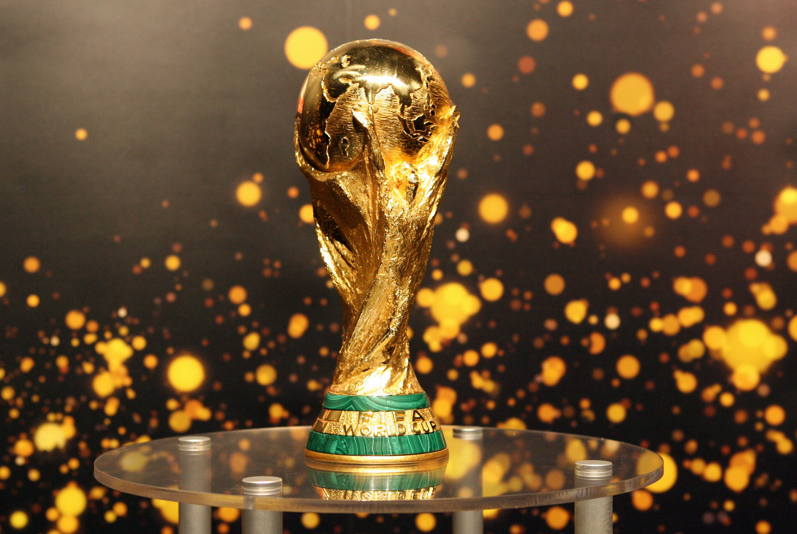
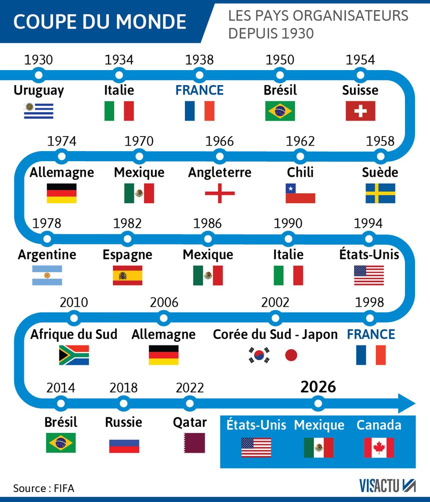

كاس العالم

كأس العالم لكرة القدم ، أو كأس العالم لكرة القدم ، هي بطولة العالم لفرق كرة القدم الوطنية للرجال. قررت في 28 مايو 1928 من قبل الاتحاد الدولي لكرة القدم (الفيفا)
تحت زخم رئيسها جول ريميه ، تم فتحه لجميع فرق الاتحادات المعترف بها من قبل الفيفا ، بما في ذلك المحترفين ، وتميزوا في هذا عن بطولة كرة القدم الأولمبية ، في الوقت المخصص للهواة.
تاريخ
يقام لأول مرة في عام 1930 ، في أوروغواي (البطل الأولمبي 1924 و 1928) ، وكل أربع سنوات منذ ذلك الحين (باستثناء عامي 1942 و 1946 بسبب الحرب العالمية الثانية). منذ الإصدار الثاني ، في عام 1934 ، تتضمن كأس العالم مرحلة تأهيل تنظمها كل اتحاد قاري ، ومرحلة نهائية تجمع الفرق المؤهلة (من 16 عام 1934 إلى 32 عام 1998) في بلد واحد أو أكثر لمدة شهر تقريبا. تتضمن هذه المرحلة النهائية حاليًا جولة مجموعة أولى تؤهل ستة عشر فريقًا لمرحلة خروج المغلوب من دور الـ 16. الدولة المنظمة من المرحلة النهائية تم تحديده من قبل FIFA ويتم تأهيله تلقائيًا. من بين 21 كأس العالم المتنافس عليها حتى عام 2018 ، فازت ثماني دول فقط على الأقل على الأقل. البرازيل ، الفريق الوحيد الذي لعب في جميع المراحل النهائية من المسابقة ، يحمل الرقم القياسي في الإصدارات التي تم تحقيقها بخمس نجاحات ، وقد حصل على الحق في الاحتفاظ بكأس جول-ريميه مع فوزه الثالث في المنافسة عام 1970 ، مع بيليه ، اللاعب الوحيد الذي فاز ببطولة العالم ثلاث مرات. إيطاليا وألمانيا لديهما أربعة ألقاب. فازت أوروجواي ، الفائزة بالدور الأول ، الأرجنتين وفرنسا في الكأس مرتين ، إنجلترا وإسبانيا مرة واحدة. جرت النسخة الأخيرة في روسيا عام 2018 ، وستقام النسخة التالية في قطر عام 2022. وستكون النسخة الأولى عام 2026 في الولايات المتحدة وكندا والمكسيك) هي النسخة الأولى التي تضم 48 فريقًا مشاركًا.

كأس العالم: جوائز
تُظهر الرسوم البيانية لكأس العالم لكرة القدم ثماني دول فقط ، حافظت على الكأس منذ إنشائها في عام 1930. البرازيل تحمل الرقم القياسي للانتصارات في المنافسة مع 5 ألقاب (1958 ، 1962 ، 1970 ، 1994 و 2002) ، تليها إيطاليا بأربعة انتصارات (1934 ، 1938 ، 1982 ، 2006) وألمانيا (1954 ، 1974 ، 1990 ، 2014). إسبانيا ، التي فازت بكأس العالم الأولى عام 2010 في جنوب إفريقيا. الدول الأخرى الموجودة هي الأرجنتين (مرتين) ، أوروجواي (مرتين) ، فرنسا (مرتين) ، إنجلترا (مرة واحدة). لاحظ أن كأس العالم لم تقام بين عامي 1938 و 1950 ، بسبب الحرب العالمية الثانية.